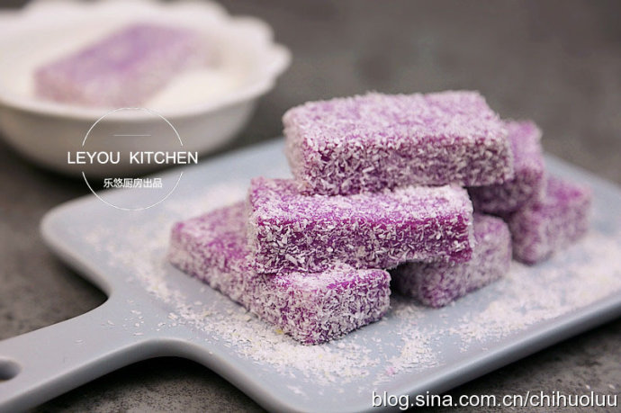
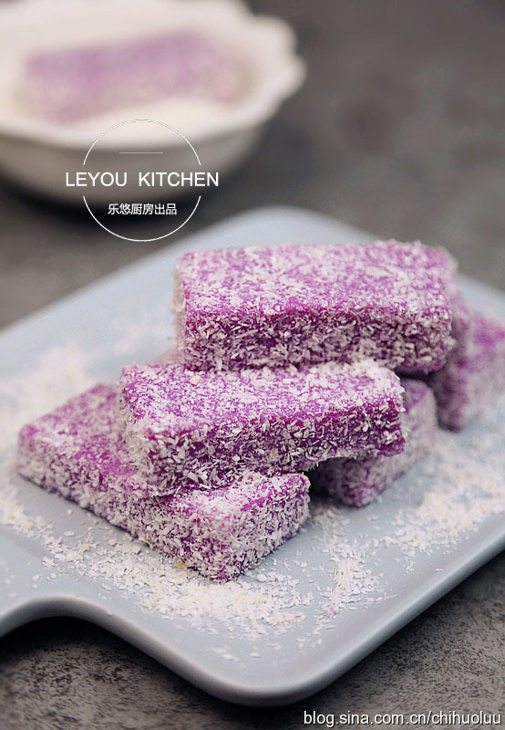
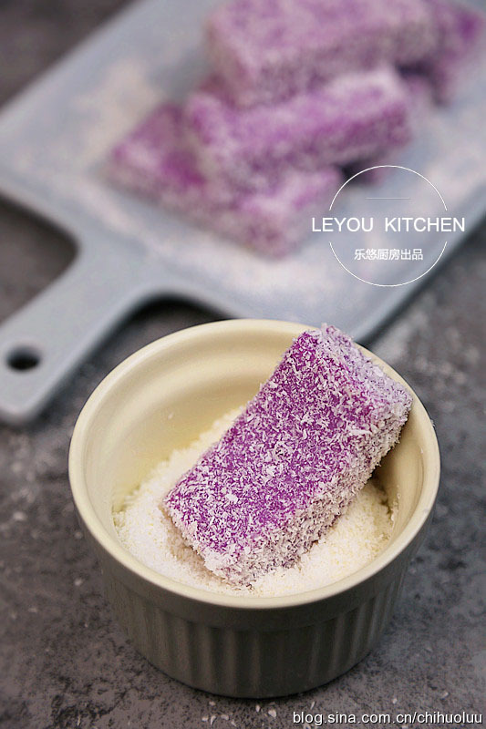
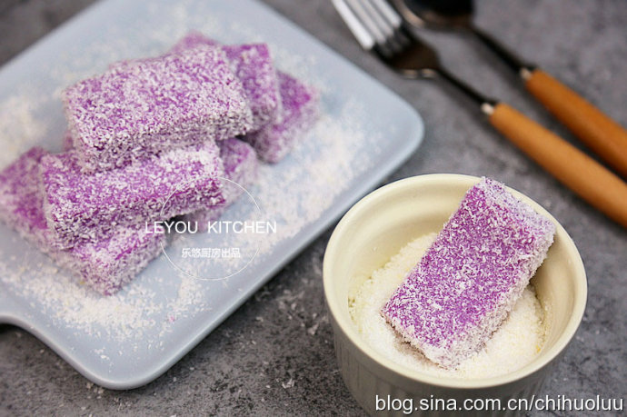
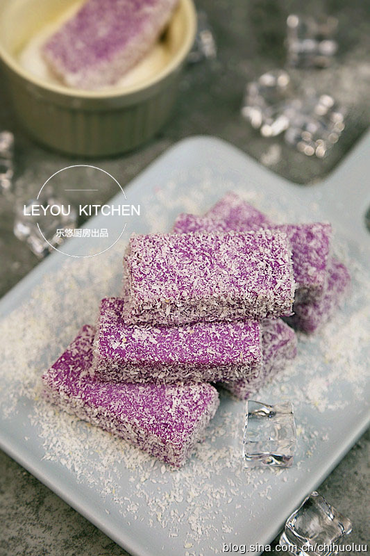
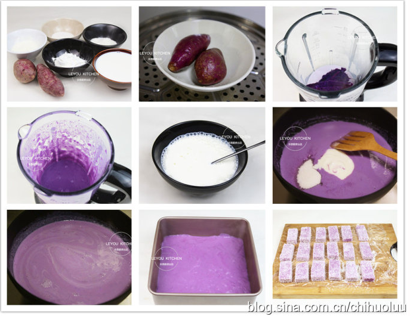

您现在的位置是：首页>慢生活>日记
不用烤箱、不放油，简单几步就做成的夏日点心
发布时间：2017-05-21编辑：Imitater
转载至 -乐悠厨房的博客
以下介绍的是椰蓉紫薯糕的做法。这款小点心颜色诱人，吃起来香甜软滑，冰凉舒服，非常适合夏季食用。做法也超有亮点，不用烤箱，不放油，简单几步就可以做成。可以说，零起点、零难度。喜欢的亲们一定要试试看，超健康的哦~




具体制作方法
第一步：准备食材。紫薯200克、酸奶120克、牛奶500克、玉米淀粉80克、白砂糖40克、椰蓉适量。（椰蓉如果在超市买不到，可以考虑网购，大概几块钱一包。）
第二步：把紫薯清洗干净，然后放到锅中蒸熟。（蒸到用筷子轻松刺穿即可。）
第三步：紫薯去皮放到料理机中，再倒入一半的牛奶，然后开始搅打。
第四步：搅打至紫薯糊细腻，无颗粒，如图。
第五步：把剩下的另一半牛奶放到玉米淀粉中搅拌至没有颗粒。

关键字词 紫薯 椰蓉 甜 点心
下一篇：柴米油盐的生活才是真实